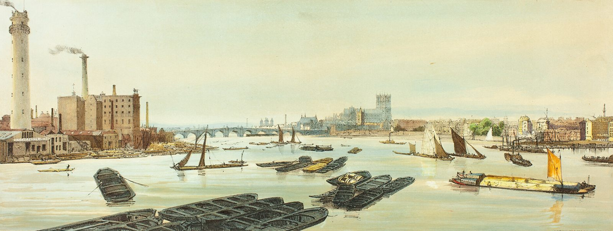
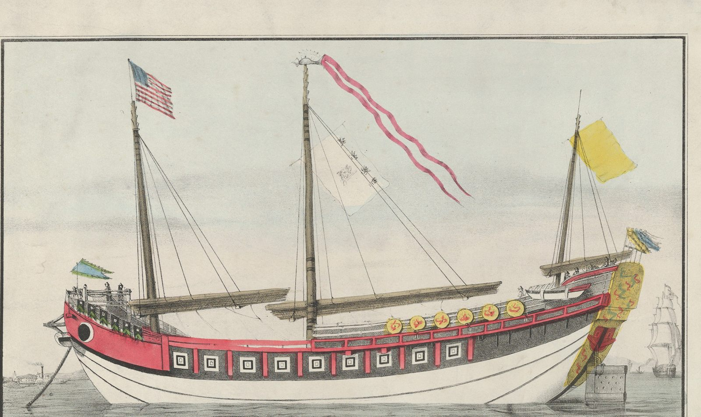

Under 2 years
[Aerospace client]
Aerospace and deep tech
From UK incorporation to acquisition by [acquirer], a publicly listed company. NEXUS gave the founders structure, accountability and an independent commercial view.
Design draft for client review. Not the official NEXUS website.
Get ticketsOne accountable team in London. NEXUS Creative HQ helps technology companies, science parks and innovation zones enter the UK, and connects UK companies with China and Hong Kong through partners on the ground.

London
One accountable team. Customers, partners and investors in the UK.
Tianjin
Shanghai
Hong Kong
1,400+
Business plans assessed1
100+
Businesses actively supported1
16
Curated global partnerships1
China-Britain Business Council
Member
1 Figures reported by NEXUS, November 2026. Definitions and method: [page to publish]. Pictures: paintings and prints of London and China, credited below.
UK representation, market entry and scale-up support. Each starts with a conversation or a diagnostic, and the same London team stays with you.
UK Representation (annual) and the UK Landing Programme (per cohort). Starts with a partnership call.
Market-Entry Diagnostic, UK Soft Landing and Market Intelligence Reports. Starts with a paid diagnostic.
A Growth Diagnostic, then AI, R&D tax, IP and fundraising projects through our partner network.
2027 delegations to mainland China and Hong Kong, and representation in China through RidgeCore Ventures.
The corridor runs in both directions. Chinese companies and institutions land in the UK through NEXUS; UK companies reach China and Hong Kong through our partners on the ground.

| Where | Partner | Relationship | When |
|---|---|---|---|
| China | RidgeCore Ventures | Reciprocal representation: they act for our clients in China, we act for theirs in the UK | Active |
| Tianjin | Binhai Zhongguancun Science Park [partner names and dates to confirm] | Two signed MOUs; a pipeline of Tianjin companies into the UK | 2025, 2026 |
| Shanghai | S-Tron | Exhibiting with UK companies, then speaking on stage | 2025, 2026 |
| Hangzhou | CBBC delegation | Matchmaking in AI, robotics and life sciences | Apr 2026 |
| Hong Kong | 2027 delegations | UK companies to mainland China and Hong Kong. Register interest | 2027 |
[All seven case studies: Results page to build]
Under 2 years
Aerospace and deep tech
From UK incorporation to acquisition by [acquirer], a publicly listed company. NEXUS gave the founders structure, accountability and an independent commercial view.
Customer-funded
Deep tech and robotics
From no customers to a customer-funded proof of concept and a follow-on programme.
UK–Asia consortium
AI compute infrastructure
Core architecture independently validated; a UK and Asia research consortium in formation with Innovate UK.
Or, for institutions, a partnership call. Either way you leave with a plan you can act on.
Companies
International companies start with the Market-Entry Diagnostic; UK scale-ups with the Growth Diagnostic. You leave with priorities, risks, the partners you need and a costed next stage. The fee is credited against further work.
Fee on application
Request a diagnosticInstitutions
We learn your goals, your companies and your timelines, then send a scoped proposal for UK Representation or a UK Landing Programme, with deliverables, reporting and price.
Annual retainer or per cohort, on application
Book a partnership callLed by Mark Sarfo-Kantanka, CEO and Co-Founder. [Team section with portraits: to build]
16 Nov
2026
Tickets on sale
The Dorchester, London. Created and delivered by NEXUS, celebrating overseas founders building businesses in the UK. Ten categories, one hundred finalists.
Report in development
Our annual guide for UK technology companies looking at China and Hong Kong.
NEXUS Creative HQ is a London-based growth partner and the operational bridge between the UK and China for technology companies, science parks and innovation zones. One accountable team in London works with partners on the ground in Tianjin, Shanghai and Hong Kong.
Companies start with a Market-Entry Diagnostic and a written UK entry plan, then UK Soft Landing support. Science parks and innovation zones use UK Representation or a UK Landing Programme, starting with a partnership call. For companies, for institutions.
Through NEXUS delegations to mainland China and Hong Kong in 2027, and representation in China through our partner RidgeCore Ventures. See the Asia corridor.
Pricing is on application. Diagnostics are a fixed fee credited against further work; UK Representation is an annual retainer; Landing Programmes are priced per cohort.
NEXUS reviews and endorses applications as a consortium partner of UK Endorsing Services (UKES). This is separate from our commercial services. [Link to the Endorsing role page: to build]
Tell us where you want to grow.
We reply to every enquiry from London. [Response time to confirm]
Typical working-hours overlap
09:00London
17:00Shanghai and Hong Kong
Monday to Friday, 09:00 to 18:00 local time in both markets
SBREC, 80 Basinghall Street
London EC2V 5AG
[Email to confirm]@nexuscreativehq.com